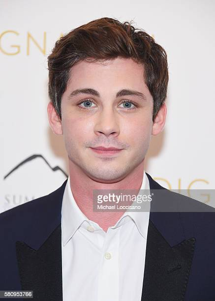
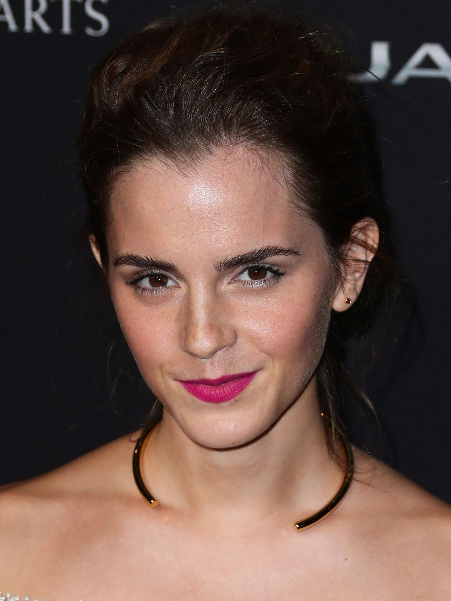
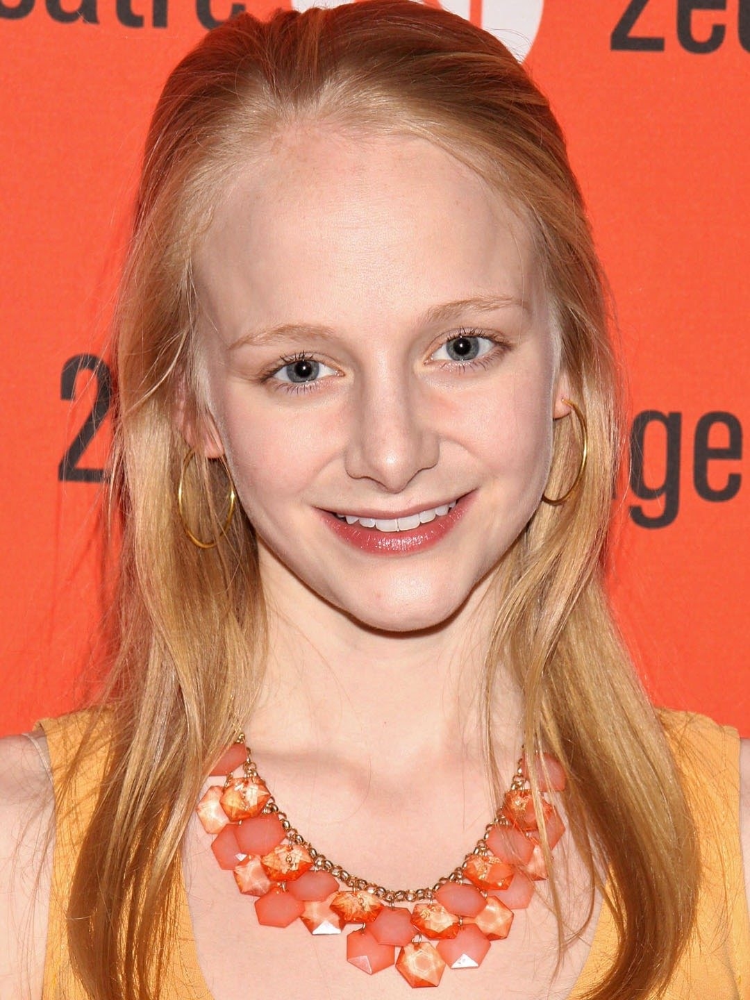
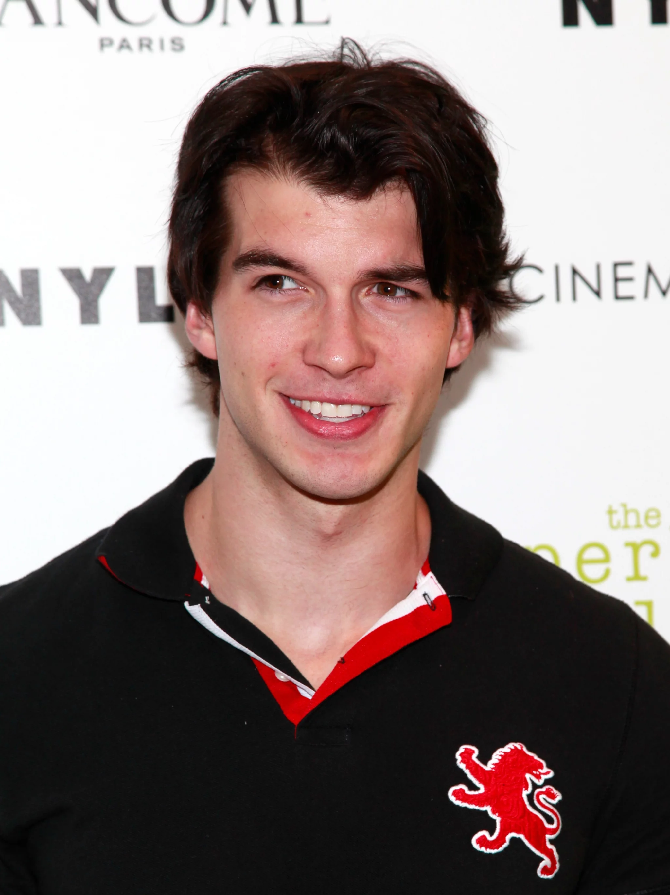
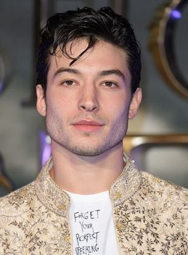
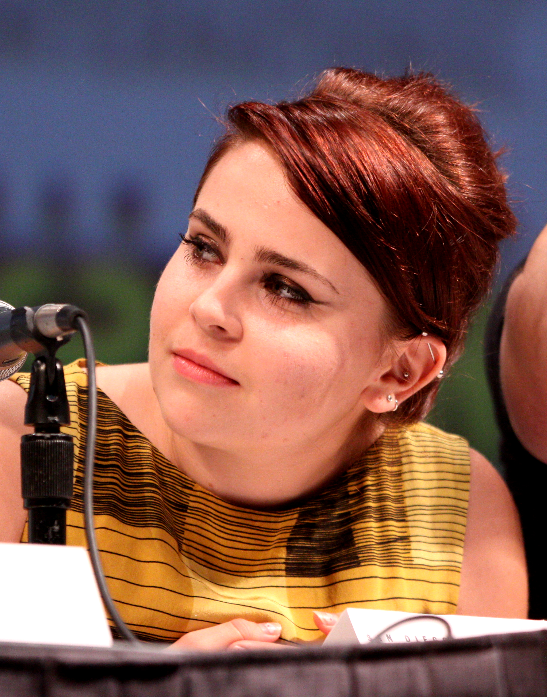

aqui está os principais personagens:

PERSONAGEM: Charlie.
Logan Wade Lerman é um ator norte-americano. Ele é mais reconhecido por interpretar o personagem-título da série de filmes de fantasia e aventura Percy Jackson e o personagem Charlie no filme de drama adolescente, As Vantagens de Ser Invisível.

PERSONAGEM: Sam
Emma Charlotte Duerre Watson é uma atriz, modelo e ativista britânica nascida na França, conhecida mundialmente por ter atuado na série de filmes Harry Potter, que serviram como adaptação para o cinema da série de livros homônima da escritora J. K. Rowling.

PERSONAGEM: Alice
Erin Wilhelmi é uma atriz americana. Ela é mais conhecida por seu papel como Alice em As Vantagens de Ser Invisível e pela adaptação teatral de To Kill a Mockingbird, de Aaron Sorkin.

PERSONAGEM: Bob
Adam Hagenbuch é um ator americano famoso por seus papéis em várias séries populares, como Undateable as Trent (2015-2016), Switched at Birth como Greg 'Mingo' Shimingo (2015-2017), Fuller House como Jimmy Gibbler (2016-2017), e outros. Além disso, trabalhou como diretor de fotografia, produtor, editor e também no departamento de câmera e elétrica de várias séries de TV.

PERSONAGEM: Patrick
Ezra Matthew Miller é um ator, cantor, músico e modelo americano. Participou do primeiro episódio de uma pequena web-série humorística chamada Cakey! The Cake from Outer Space, e foi um dos jogadores do curta Critical Hit. Fez sua estreia no cinema com o filme Afterschool do diretor Antonio Campos.

PERSONAGEM: Mary
Mae Margaret Whitman é uma atriz, dubladora e cantora norte-americana. Depois de estrear no cinema em When a Man Loves a Woman, teve outros papéis secundários em filmes como One Fine Day, Independence Day e Hope Floats.